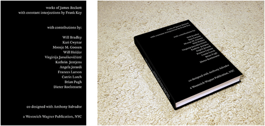

Wednesday, February the 20th, 2013
back to: title, date or indexes
I mentioned recently that in the first week of March I shall be rejoining the international jetset and swooping down upon New York City. This kind of shenanigans undermines my reputation as a Diogenesian recluse, but you will be relieved to hear that I am bent upon important Hooting Yard business. To wit, the launch of this lavish and lovely book:

Here is part of the official press release from Westreich Wagner:
“works of James Beckett with constant interjections by Frank Key”
In a spatially and conceptually complex arrangement of text, image and scale, this book is a multi-vocal account of the varied practice of Amsterdam-based artist James Beckett. Beckett's work explores minor histories, many of which are concerned with industrial development and demise across Europe, a process of investigation which is as much physical as it is biographical. The pages of this new monograph are littered with associative interjections from the archive of Frank Key's radio program “Hooting Yard”, as an irreverent running commentary. These texts become marginal notes to, and poetic mirrors of, the contributions of the book's eleven other authors.
Contributing Authors:
Will Bradley, Kari Cwynar, Moosje M. Goosen, Will Holder, Virginija Januškevičiūtė, Kathrin Jentjens, Angela Jerardi, Frank Key, Frances Larson, Catrin Lorch, Brian Pugh and Dieter Roelstraete.
The launch itself, which will feature Mr Key spouting his texts out loud, takes place from 6.00–8.00 PM on Monday 4 March at 114 Greene Street, Floor 2, New York, NY 10012. Should any fanatically devoted Hooting Yard readers and listeners wish to attend, please send a note to the publishers here.